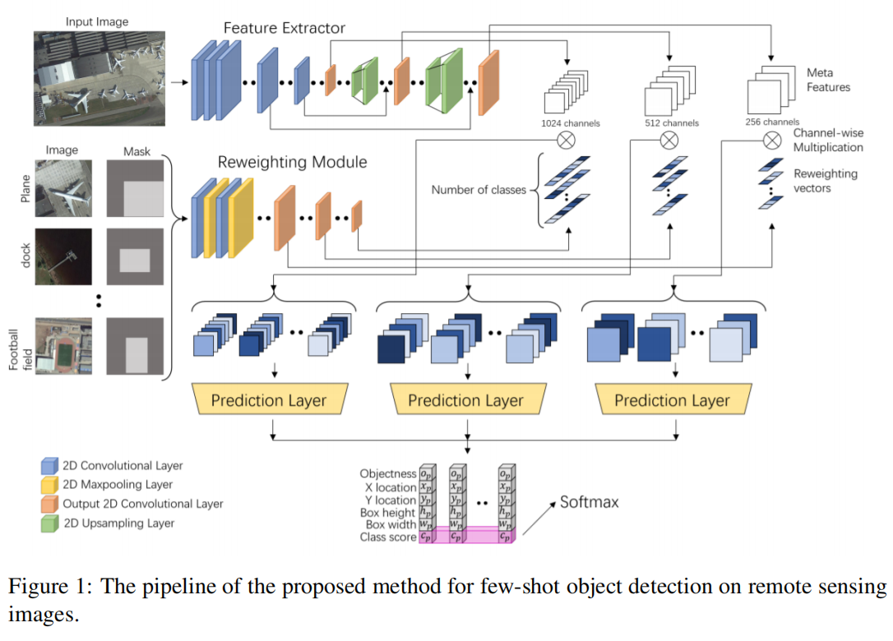
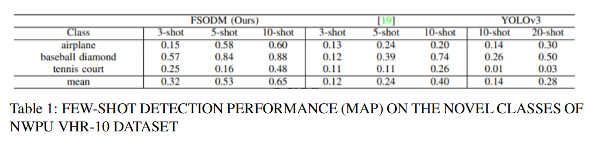
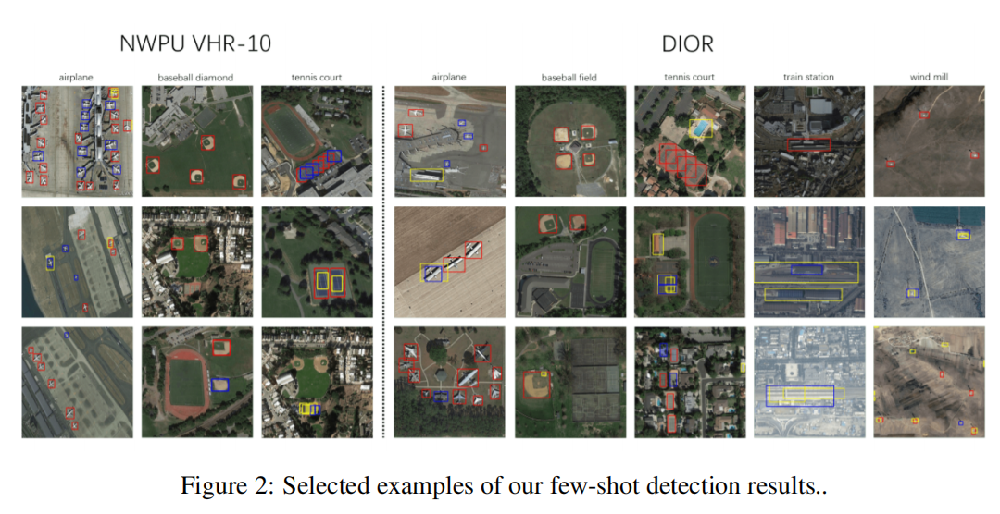

| Status: | MS Student |
| Program: | Computer Science and Engineering |
| School: | Tandon School of Engineering, New York University |
| Website: | https://www.linkedin.com/in/jingyu-deng-3241511a1/ |
| RA Period: | From 2019-09 to Present |
| I'm a master student at New York University and a research assistant in NYU Multimedia and Visual Computing Lab, advised by Professor Yi Fang. I am broadly interested in 3D Computer Vision, Machine Learning and Remote Sensing. |
In this project, we deal with the problem of object detection on remote sensing images. Previous methods have developed numerous deep CNN-based methods for object detection on remote sensing images and the report remarkable achievements in detection performance and efficiency. However, current CNNbased methods mostly require a large number of annotated samples to train deep neural networks and tend to have limited generalization abilities for unseen object categories. In this project, we introduce a few-shot learning-based method for object detection on remote sensing images where only a few annotated samples are provided for the unseen object categories. More specifically, our model contains three main components: a meta feature extractor that learns to extract feature representations from input images, a reweighting module that learn to adaptively assign different weights for each feature representation from the support images, and a bounding box prediction module that carries out object detection on the reweighted feature maps. We build our few-shot object detection model upon YOLOv3 architecture and develop a multi-scale object detection framework. Experiments on two benchmark datasets demonstrate that with only a few annotated samples our model can still achieve a satisfying detection performance on remote sensing images and the performance of our model is significantly better than the well-established baseline models.
We introduce a few-shot learning-based method for object detection on remote sensing images where only a few annotated samples are provided for the unseen object categories. As displayed in Figure.1, our method consists of three main components: a Meta Feature Extractor, a Reweighting Module, and a Bounding Box Prediction Module. The Feature Extractor network takes a query image as input and produces meta feature maps at three different scales. The Reweighting Module takes as input N support images with labels, one for each class, and outputs three groups of N reweighting vectors. These reweighting vectors are used to recalibrate the meta-feature maps of the same scale through a channel-wise multiplication. The reweighted feature maps are then fed into three independent bounding box detection modules to predict the objectness scores (o), the bounding box locations and sizes (x, y, w, h) and class scores (c) at three different scales.
In this section, we evaluate the performance of our model for the few-shot object detection on two public benchmark RSI datasets. As shown in Table 1, our proposed FSODM model achieves significantly better performance than Few-shot object detection via feature reweighting and YOLOv3. More specifically, compared to another few-shot object detector Few-shot object detection via feature reweighting, our method obtains a mean mAP 166.6% higher in the 3-shot setting, 120.8% higher in 5-shot setting, and 62.5% higher in the 10-shot setting. Conventional none few-shot-based method YOLOv3 obtains a lot worse performance than the two few-shot-based methods. Even under the 20-shot setting, YOLOv3 only gets an mAP of 0.28, which is worse than our FSODM model under the 3-shot setting. Moreover, as shown in Table II, with the increase in the number of annotated samples in novel classes, the detection performance of our FSODM model increases fast. From Table 1 one can also see that both our FSODM model and the comparing methods obtain better performance on the ‘baseball diamond’ category. This is because baseball diamonds have smaller size variations, variations. Figure.2 shows selected examples of our few-shot detection results. Left: detection results on the novel classes of NWPU VHR dataset using 10-shot setting. Right: detection results on the novel classes of DIOR dataset using 20-shot setting. Red, yellow and blue boxes indicate true positive, false positive and false negative detection respectively. Table 1 lists the few-shot object detection performance of our FSODM method and the comparing methods on the novel classes of NWPU VHR-10 dataset.
